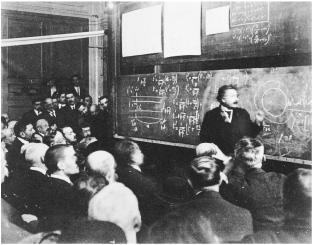

Einstein in Paris, 1922
爱因斯坦在巴黎，1922年
The 1921 Prize 1921年诺贝尔奖
It seemed obvious that Einstein would someday win the Nobel Prize for Physics. He had, in fact, already agreed to transfer the money to his first wife, Mileva Mari , when that occurred. The questions were: When would it happen? and, For what?
, when that occurred. The questions were: When would it happen? and, For what?
在大多数人看来，爱因斯坦总有一天会得到诺贝尔物理学奖。的确，他已经答应在得奖后把奖金交给前妻米列娃。但问题是：什么时候能够得奖，以及因为什么得奖？
Once it was announced—in November 1922, awarding him the prize for 1921—the questions were: What took so long? and, Why “especially for his discovery of the law of the photoelectric effect”?
1922年11月，他获得1921年诺贝尔奖的消息公布了。这时的问题是：为什么过了那么久，以及为什么“特别是因为他发现了光电效应定律”。
It has been part of the popular lore that Einstein learned that he had finally won while on his way to Japan. “Nobel Prize for physics awarded to you. More by letter,” read the telegram sent on November 10. In fact, he had been alerted as soon as the Swedish Academy made the decision in September, well before he left on his trip.
有报道说，爱因斯坦是在前往日本途中得知获奖消息的。“授予您诺贝尔物理学奖，更多消息见信函。”11月10日的电报写道。但事实上，瑞典科学院的决定是9月份做出的，他在临行前就已经获悉。
The chairman of the physics award committee, Svante Arrhenius, had heard that Einstein was planning to go to Japan in October, which meant that he would be away for the ceremony unless he postponed the trip. So he wrote Einstein directly and explicitly: “It will probably be very desirable for you to come to Stockholm in December.” Expressing a principle of pre–jet travel physics, he added, “And if you are then in Japan that will be impossible.”1 Coming from the head of a Nobel Prize committee, it was clear what that meant. There are not a lot of other reasons for physicists to be summoned to Stockholm in December.
物理奖评审委员会主席斯万特·阿雷尼乌斯听说，爱因斯坦计划10月份去日本，这意味着如果他不推迟旅行，将无法出席颁奖典礼。于是阿雷尼乌斯给爱因斯坦写了封信。“真希望您12月份能来斯德哥尔摩。”他说。他还表述了一条乘飞机旅行实现之前的（pre-jet travel）物理学原理：“如果您那时在日本，那将是不可能的。” 这样的话出自诺贝尔奖委员会主席，其意自明。物理学家12月份被召到斯德哥尔摩不可能有其他原因。
Despite knowing that he would finally win, Einstein did not see fit to postpone his trip. Partly it was because he had been passed over so often that it had begun to annoy him.
尽管知道最终能获奖，但爱因斯坦认为推迟旅行并不合适，这部分原因是由于他已经数次遭拒，不由得心生不快。
He had first been nominated for the prize in 1910 by the chemistry laureate Wilhelm Ostwald, who had rejected Einstein’s pleas for a job nine years earlier. Ostwald cited special relativity, emphasizing that the theory involved fundamental physics and not, as some Einstein detractors argued, mere philosophy. It was a point that he reiterated over the next few years as he resubmitted the nomination.
早在1910年，他就被诺贝尔化学奖获得者奥斯特瓦尔德首次提名。而九年前，他曾拒绝过爱因斯坦的求职申请。奥斯特瓦尔德称赞了狭义相对论，强调这一理论涵盖了基础物理学，而不像某些诋毁爱因斯坦的人所声称的仅仅涉及哲学。后来他又多次提名爱因斯坦，并屡次强调这一点。
The Swedish committee was mindful of the charge in Alfred Nobel’s will that the prize should go to “the most important discovery or invention,” and it felt that relativity theory was not exactly either of those. So it reported that it needed to wait for more experimental evidence “before one can accept the principle and in particular award it a Nobel prize.”2
瑞典诺贝尔奖委员会对诺贝尔的遗愿念念不忘，牢记该奖项应当奖励那些“最重要的发现或发明”。它感觉这两项要求相对论都不符合，于是委员会的报告说，“在人们可以接受这一原理，特别是授予诺贝尔奖之前”，相对论有待于获得更多的实验证据。
Einstein continued to be nominated for his work on relativity during most of the ensuing ten years, gaining support from distinguished theorists such as Wilhelm Wien, although not yet from a still-skeptical Lorentz. His greatest obstacle was that the committee at the time was leery of pure theorists. Three out of the committee’s five members throughout the period from 1910 to 1922 were experimentalists from Sweden’s Uppsala University, known for its fervent devotion to perfecting experimental and measuring techniques. “Swedish physicists with a strong experimentalist bias dominated the committee,” notes Robert Marc Friedman, a historian of science in Oslo. “They held precision measurement as the highest goal for their discipline.” That is one reason Max Planck had to wait until 1919 (when he was awarded the delayed prize for 1918) and why Henri Poincaré never won at all.3
在接下来的十年间，爱因斯坦仍然因为相对论而多次被提名。他获得了像维恩这样的著名理论家的支持，尽管洛伦兹对此仍持怀疑态度。他最大的障碍是，当时的诺贝尔奖委员会对纯理论家很警惕。从1910年到1922年，委员会的五位成员中有三位是来自瑞典乌普萨拉大学的实验家，他们都是因为在完善实验测量技巧方面的贡献而出名的。“带有强烈实验偏好的瑞典物理学家们把持着委员会，”奥斯陆科学史家罗伯特·马克·弗里德曼指出，“他们认为，精密测量是这门学科的最高目标。”也正是由于这个原因，普朗克要等到1919年（那时授予的是迟来的1918年诺贝尔奖）才能获奖，而庞加莱则压根没有获奖。
The dramatic announcement in November 1919 that the eclipse observations had confirmed parts of Einstein’s theory should have made 1920 his year. By then Lorentz was no longer such a skeptic. He along with Bohr and six other official nominators wrote in support of Einstein, mostly focusing on his completed theory of relativity. (Planck wrote in support as well, but his letter arrived after the deadline for consideration.) As Lorentz’s letter declared, Einstein “has placed himself in the first rank of physicists of all time.” Bohr’s letter was equally clear: “One faces here an advance of decisive significance.”4
1919年11月的日食观测戏剧性地部分证实了爱因斯坦的理论，这本应使他获得1920年的诺贝尔奖。那时洛伦兹的疑虑已经打消，他和玻尔以及其他六位正式提名者写信支持爱因斯坦，主要集中在他完成了的相对论。（普朗克也写信予以支持，不过他的信在截止日期后才到。）正如洛伦兹在信中所说，爱因斯坦“已经成为所有时代第一流的物理学家”。玻尔的信说得也很明确：“我们在这里看到了一项绝顶重要的进展。”
Politics intervened. Up until then, the primary justifications for denying Einstein a Nobel had been scientific: his work was purely theoretical, it lacked experimental grounding, and it putatively did not involve the “discovery” of any new laws. After the eclipse observations, the explanation of the shift in Mercury’s orbit, and other experimental confirmations, these arguments against Einstein were still made, but they were now tinged with more cultural and personal bias. To his critics, the fact that he had suddenly achieved superstar status as the most internationally celebrated scientist since the lightning-tamer Benjamin Franklin was paraded through the streets of Paris was evidence of his self-promotion rather than his worthiness of a Nobel.
政治也介入进来。直到那时，拒绝授予爱因斯坦诺贝尔奖的主要理由一直是科学方面的：他的工作是纯理论的，缺乏实验基础，而且一般认为并不涉及任何新定律的“发现”。在日食观测、解释水星轨道运动以及其他实验证实出现之后，这些论证仍然被用来反对爱因斯坦，但现在带有更强的文化和个人偏见。在其批评者看来，自富兰克林降服闪电之后，爱因斯坦忽然一跃成为国际上最著名的科学家和超级明星，恰恰证明他擅于自我推销，不配获得诺贝尔奖。
This subtext was evident in the internal seven-page report prepared by Arrhenius, the committee chairman, explaining why Einstein should not win the prize in 1920. He noted that the eclipse results had been criticized as ambiguous and that scientists had not yet confirmed the theory’s prediction that light coming from the sun would be shifted toward the red end of the spectrum by the sun’s gravity. He also cited the discredited argument of Ernst Gehrcke, one of the anti-Semitic antirelativists who led the notorious 1920 rally against Einstein that summer in Berlin, that the shift in Mercury’s orbit could be explained by other theories.
在委员会主席阿雷尼乌斯解释爱因斯坦为何没有在1920年获得诺贝尔奖的七页内部报告中显然有这种潜台词。他指出，日食观测结果被指模糊不清，科学家们尚未证实该理论的预言，即太阳光会在太阳引力的作用下朝光谱的红端偏移。他还引用了反犹主义者和反相对论者格尔克（他于1920年夏天在柏林领导了臭名昭著的反爱因斯坦集会）不足为信的论证，认为水星轨道的运动可以通过其他理论来解释。
Behind the scenes, Einstein’s other leading anti-Semitic critic, Philipp Lenard, was waging a crusade against him. (The following year, Lenard would propose Gehrcke for the prize!) Sven Hedin, a Swedish explorer who was a prominent member of the Academy, later recalled that Lenard worked hard to persuade him and others that “relativity was really not a discovery” and that it had not been proven.5
另一位反犹主义批评者勒纳德也在幕后发动了一场反对爱因斯坦的运动。（第二年，勒纳德提名格尔克获诺贝尔奖！）瑞典科学院院士、著名探险家斯文赫定后来回忆说，勒纳德极力劝说他和其他人相信，“相对论实际上不是一个发现，而且也没有得到证明”。
Arrhenius’s report cited Lenard’s “strong critique of the oddities in Einstein’s generalized theory of relativity.” Lenard’s views were couched as a criticism of physics that was not grounded in experiments and concrete discoveries. But there was a strong undercurrent in the report of Lenard’s animosity to the type of “philosophical conjecturing” that he often dismissed as being a feature of “Jewish science.”6
阿雷尼乌斯的报告引用了勒纳德“对爱因斯坦广义相对论中怪异之处的猛烈批判”。勒纳德批评这种物理学不是基于实验和具体发现。但勒纳德的报告中夹杂着对那种“哲学臆想”的强烈憎恨，他经常斥之为“犹太科学”的特征。
So the 1920 prize instead went to another Zurich Polytechnic graduate who was Einstein’s scientific opposite: Charles-Edouard Guillaume, the director of the International Bureau of Weights and Measures, who had made his modest mark on science by assuring that standard measures were more precise and discovering metal alloys that had practical uses, including making good measuring rods. “When the world of physics had entered upon an intellectual adventure of extraordinary proportions, it was remarkable to find Guillaume’s accomplishment, based on routine study and modest theoretical finesse, recognized as a beacon of achievement,” says Friedman. “Even those who opposed relativity theory found Guillaume a bizarre choice.”7
就这样，1920年的诺贝尔物理学奖颁给了曾经是爱因斯坦科学对手的另一位苏黎世联邦工学院毕业生查理-爱德华·纪尧姆。他是国际计量局局长，在科学上做出的贡献一般：他使人们相信标准量器更为精确，发现金属合金能够用于制造优质量杆等。“当物理学界已经开始着手进行一场非凡的思想历险时，人们惊讶地发现，纪尧姆基于日常研究和常规理论技巧所做的工作竟被看成一项出类拔萃的成就，”弗里德曼说，“即使那些反对相对论的人也会觉得纪尧姆入选很奇怪。”
By 1921, the public’s Einstein mania was in full force, for better or worse, and there was a groundswell of support for him from both theoreticians and experimentalists, Germans such as Planck and non-Germans such as Eddington. He garnered fourteen official nominations, far more than any other contender. “Einstein stands above his contemporaries even as Newton did,” wrote Eddington, offering the highest praise a member of the Royal Society could muster.8
到了1921年，公众对爱因斯坦的狂热已经如火如荼。不论是好是坏，支持他获得诺贝尔奖的呼声很高。大家似乎都认为，倘若他得不到诺贝尔奖，那将不可思议。而且从德国的普朗克到非德国的爱丁顿，理论家和实验家都有。他获得了14项正式提名，远远超过任何其他竞争者。“爱因斯坦甚至像牛顿那样超出了他的同时代人。”爱丁顿给出了皇家学会会员可能做出的最高褒扬。
This time the prize committee assigned the task of doing a report on relativity to Allvar Gullstrand, a professor of ophthalmology at the University of Uppsala, who had won the prize for medicine in 1911. With little expertise in either the math or the physics of relativity, he criticized Einstein’s theory in a sharp but unknowing manner. Clearly determined to undermine Einstein by any means, Gullstrand’s fifty-page report declared, for example, that the bending of light was not a true test of Einstein’s theory, that the results were not experimentally valid, and that even if they were there were still other ways to explain the phenomenon using classical mechanics. As for Mercury’s orbit, he declared, “It remains unknown until further notice whether the Einstein theory can at all be brought into agreement with the perihelion experiment.” And the effects of special relativity, he said, “lay below the limits of experimental error.” As one who had made his name by devising precision optical measuring instruments, Gullstrand seemed particularly appalled by Einstein’s theory that the length of rigid measuring rods could vary relative to moving observers.9
这一次，诺贝尔奖委员会给斯德哥尔摩北部乌普萨拉大学的眼科学教授古尔斯特兰德布置了一项任务，即制定一份关于相对论的报告。古尔斯特兰德曾经获得1911年的诺贝尔医学奖，他对相对论的数学和物理学都不在行，但却无知地严厉批评爱因斯坦的理论。古尔斯特兰德显然在想方设法诋毁爱因斯坦，他在长达50页的报告中宣称，光线的弯曲并不能真正检验爱因斯坦的理论，其结果在实验上并非有效，即便有效，也仍然可以用经典力学来解释这种现象。至于水星轨道，他宣称“在进一步明确爱因斯坦的理论是否符合近日点实验之前，它仍然是未知的”。他还说，狭义相对论可以测量的效应“比实验误差极限还小”。作为一个以设计精密光学测量仪器而出名的人，古尔斯特兰德似乎特别惊愕于爱因斯坦的结论，即刚性的量杆长度竟然会相对于观察者而改变。古尔斯特兰德提出，在日食期间用来检测星光弯曲的仪器可能由于温度变化而不够可靠。
Even though some members of the full Academy realized that Gullstrand’s opposition was unsophisticated, it was hard to overcome. He was a respected and popular Swedish professor, and he insisted both publicly and privately that the great honor of a Nobel should not be given to a highly speculative theory that was the subject of an inexplicable mass hysteria that would soon deflate. Instead of choosing someone else, the Academy did something that was less (or more?) of a public slap at Einstein: it voted to choose nobody and tentatively bank the 1921 award for another year.
即使瑞典科学院的某些成员意识到古尔斯特兰德的反对过于简单，事情也很难处理。他是一个德高望重的受欢迎的瑞典教授，无论是公开场合还是私下里，他都坚持说，“诺贝尔奖这一伟大奖项不应授予这样一个高度思辨的理论。它虽然现在引发了公众狂热，但很快就会消退”。最终，科学院不是另选一个人，而是做了一件对爱因斯坦伤害更小（或更多？）的事情；经过投票，它没有定出人选，而是暂时将1921年的奖推到了下一年。
The great impasse threatened to become embarrassing. His lack of a prize had begun to reflect more negatively on the Nobel than on Einstein. “Imagine for a moment what the general opinion will be fifty years from now if the name Einstein does not appear on the list of Nobel laureates,” wrote the French physicist Marcel Brillouin in his 1922 nominating letter.10
这一结局弄不好就会变得无法收场。爱因斯坦不获奖对诺贝尔奖的影响要比对他本人更坏。“试想一下，如果50年后爱因斯坦的名字没有出现在诺贝尔奖获得者的名单中，舆论会怎么想。”法国物理学家马塞尔·布里渊在1922年的提名信中写道。
To the rescue rode a theoretical physicist from the University of Uppsala, Carl Wilhelm Oseen, who joined the committee in 1922. He was a colleague and friend of Gullstrand, which helped him gently overcome some of the ophthalmologist’s ill-conceived but stubborn objections. And he realized that the whole issue of relativity theory was so encrusted with controversy that it would be better to try a different tack. So Oseen pushed hard to give the prize to Einstein for “the discovery of the law of the photoelectric effect.”
这时，1922年进入委员会的乌普萨拉大学理论物理学家奥森前来“救驾”了。他是古尔斯特兰德的同事和朋友，这使他能够和缓地帮助爱因斯坦逐渐克服这位科学家的一些有欠考虑的顽固反对。他意识到相对论问题太富争议，最好另谋出路。于是奥森力主因“发现光电效应定律”而授奖于爱因斯坦。
Each part of that phrase was carefully calculated. It was not a nomination for relativity, of course. In fact, despite the way it has been phrased by some historians, it was not for Einstein’s theory of light quanta, even though that was the primary focus of the relevant 1905 paper. Nor was it for any theory at all. Instead, it was for the discovery of a law.
这句话的每个字都经过了认真的斟酌推敲。当然，它只字未提相对论（事实上，历史学家对此有不同的说法），它不是因为爱因斯坦的光量子理论（即使那是1905年一篇论文的主要关注点），也不是因为任何理论，而是因为对一条定律的发现。
A report from the previous year had discussed Einstein’s “theory of the photoelectric effect,” but Oseen made clear his different approach with the title of his report: “Einstein’s Law of the Photoelectric Effect” (emphasis added). In it, Oseen did not focus on the theoretical aspects of Einstein’s work. He specified instead what he called a fundamental natural law, fully proven by experiment, that Einstein propounded: the mathematical description of how the photoelectric effect was explained by assuming that light was absorbed and emitted in discrete quanta, and the way this related to the frequency of the light.
上一年已经有一份报告讨论了爱因斯坦的“光电效应理论”，但奥森报告的标题即表明他采取了不同的进路：“爱因斯坦的光电效应定律。”在其中，奥森并没有集中在爱因斯坦工作的理论方面，而是强调了爱因斯坦提出的一条所谓的基本自然定律，它已经完全被实验所证实：通过假设光以离散量子的方式被吸收和发射，以及它与光的频率的关系，提出了对光电效应的数学描述。
Oseen also proposed that giving Einstein the prize delayed from 1921 would allow the Academy to use that as a basis for simultaneously giving Niels Bohr the 1922 prize, because his model of the atom built on the laws that explained the photoelectric effect. It was a clever coupled-entry ticket for making sure that the two greatest theoretical physicists of the time became Nobel laureates without offending the Academy’s old-line establishment. Gullstrand went along. Arrhenius, who had met Einstein in Berlin and been charmed, was now also willing to accept the inevitable. On September 6, 1922, the Academy voted accordingly, and Einstein and Bohr were awarded the 1921 and 1922 prizes, respectively.
奥森还指出，授予爱因斯坦迟到的1921年诺贝尔奖可以使科学院有理由同时授予玻尔1922年诺贝尔奖，因为玻尔的原子模型建立在对光电效应定律的解释上。这种做法真是很妙，它既能确保当时两位最伟大的理论物理学家获得诺贝尔奖，同时又不违反科学院的传统。这一结果看来是不可避免了。古尔斯特兰德对此表示赞同，阿雷尼乌斯（他曾在柏林见过爱因斯坦，对其印象很深）现在也愿意接受。于是，1922年9月6日，瑞典科学院投了票，爱因斯坦和玻尔分别被授予1921年和1922年的诺贝尔物理学奖。
Thus it was that Einstein became the recipient of the 1921 Nobel Prize, in the words of the official citation, “for his services to theoretical physics, and especially for his discovery of the law of the photoelectric effect.” In both the citation and the letter from the Academy’s secretary officially informing Einstein, an unusual caveat was explicitly inserted. Both documents specified that the award was given “without taking into account the value that will be accorded your relativity and gravitation theories after these are confirmed in the future.”11 Einstein would not, as it turned out, ever win a Nobel for his work on relativity and gravitation, nor for anything other than the photoelectric effect.
就这样，按照官方的说法，爱因斯坦荣获1921年诺贝尔奖，是“为了表彰他对理论物理学的贡献，特别是因为他发现了光电效应定律”。无论是这段引文，还是科学院秘书通知爱因斯坦的正式信函中，都插入了一段非同寻常的说明以防止误解。两份文件都强调，该奖的颁发“没有考虑您的相对论和引力场论在将来获得证实之后将拥有的价值”。 结果，爱因斯坦没有因为相对论和引力方面的工作而获奖，也没有因为光电效应之外的工作而获奖。
There was a dark irony in using the photoelectric effect as a path to get Einstein the prize. His “law” was based primarily on observations made by Philipp Lenard, who had been the most fervent campaigner to have him blackballed. In his 1905 paper, Einstein had credited Lenard’s “pioneering” work. But after the 1920 anti-Semitic rally in Berlin, they had become bitter enemies. So Lenard was doubly outraged that, despite his opposition, Einstein had won the prize and, worse yet, done so in a field that Lenard pioneered. He wrote an angry letter to the Academy, the only official protest it received, in which he said that Einstein misunderstood the true nature of light and was, in addition, a publicity-seeking Jew whose approach was alien to the true spirit of German physics.12
因光电效应而让爱因斯坦得奖是一个黑色幽默。他的“定律”主要基于勒纳德所做的观测，而勒纳德又是最强烈反对他当选的竞争者。在1905年的论文中，爱因斯坦曾经感谢过勒纳德的“先驱性”工作。但在1920年柏林的反犹集会之后，他们变成了仇敌。现在，爱因斯坦不仅在勒纳德反对的情况下获了奖，而且还是在一个以勒纳德为先驱的领域，这使勒纳德异常愤怒。他气急败坏地给科学院写了封信（这也是科学院收到的唯一一封正式抗议信），说爱因斯坦误解了光的真正本性，而且他还是一个追名逐利的犹太人，其做法与德国物理学的真正精神背道而驰。
Einstein was traveling by train through Japan and missed the official award ceremony on December 10. After much controversy over whether he should be considered German or Swiss, the prize was accepted by the German ambassador, but he was listed as both nationalities in the official record.
12月10日，爱因斯坦正乘火车在日本旅行，错过了颁奖典礼。针对他领奖时应被看作德国人还是瑞士人有过许多争论，最终诺贝尔奖由德国大使领受，但在官方记录里他被列入双重国籍。
The formal presentation speech by Arrhenius, the committee chair, was carefully crafted. “There is probably no physicist living today whose name has become so widely known as that of Albert Einstein,” he began. “Most discussion centers on his theory of relativity.” He then went on to say, almost dismissively, that “this pertains essentially to epistemology and has therefore been the subject of lively debate in philosophical circles.”
委员会主席阿雷尼乌斯精心策划了正式陈述。“也许没有哪一位在世的物理学家能够像阿尔伯特·爱因斯坦那样出名，”他说，“大多数讨论都集中在他的相对论。”然后他带着近乎轻蔑的口气说：“它本质上属于认识论，因此一直是哲学圈里争论的热门话题。”
After touching briefly on Einstein’s other work, Arrhenius explained the Academy’s position on why he had won. “Einstein’s law of the photoelectrical effect has been extremely rigorously tested by the American Millikan* and his pupils and passed the test brilliantly,” he said. “Einstein’s law has become the basis of quantitative photo-chemistry in the same way as Faraday’s law is the basis of electro-chemistry.”13
在简要谈及爱因斯坦的其他工作后，阿雷尼乌斯给出了科学院对他获奖原因的解释。“爱因斯坦的光电效应定律已经被美国的密立根和他的学生以极为严格的方法所检验，并且出色地通过了检验。”他说，“就像法拉第定律是电化学的基础一样，爱因斯坦的定律已经成为定量光化学的基础。”
Einstein gave his official acceptance speech the following July at a Swedish science conference with King Gustav Adolf V in attendance. He spoke not about the photoelectric effect, but about relativity, and he concluded by emphasizing the importance of his new passion, finding a unified field theory that would reconcile general relativity with electromagnetic theory and, if possible, with quantum mechanics.14
次年7月，爱因斯坦在一次瑞典科学会议上发表了正式受奖演说，新瑞典国王古斯塔夫五世也出席了。他没有谈及光电效应，而是讨论了相对论。他在结尾强调了其工作的重要性，即发现一种统一场论，将广义相对论与电磁理论（如果可能的话还有量子力学）调和起来。
The prize money that year amounted to 121,572 Swedish kronor, or $32,250, which was more than ten times the annual salary of the average professor at the time. As per his divorce agreement with Mari, Einstein had part of it sent directly to Zurich to reside in a trust for her and their sons, and the rest went into an American account with the interest directed for her use.
当年的诺贝尔奖金是121572瑞典克朗，约合32250美元，比当时一般教授的年薪要高十倍多。根据与米列娃签订的离婚协议，爱因斯坦将一部分钱直接寄给苏黎世，为米列娃和孩子们做信托，其余的钱则汇入一个美国账户，利息直接归米列娃使用。
This prompted another row. Hans Albert complained that the trust arrangement, which had previously been agreed to, made only the interest on the money accessible to the family. Once again, Zangger intervened and calmed the dispute. Einstein jokingly wrote to his sons, “You all will be so rich that some fine day I may ask you for a loan.”The money was eventually used by Mari to buy three homes with rental apartments in Zurich.15
这引发了另一场争吵。汉斯·阿尔伯特抱怨说，这种以前承诺的安排使得家人只能使用利息。仓格尔又一次进行了调解，才使争论平息下来。爱因斯坦开玩笑似的给儿子们写信说：“你们都会变得非常富有，有朝一日兴许我会找你们贷款的。”米列娃最终用这笔钱在苏黎世买了三套用于出租的房子。
Newton’s Bucket and the Ether Reincarnated 牛顿的水桶和以太的重现
“Anything truly novel is invented only during one’s youth,” Einstein lamented to a friend after finishing his work on general relativity and cosmology. “Later one becomes more experienced, more famous—and more blockheaded.”16
“一个人只有在年轻时才能发明真正新颖的东西，”爱因斯坦在完成广义相对论和宇宙论的工作后对一位朋友悲叹道，“后来他越来越有经验，越来越著名——但思想却越来越僵化了。”
Einstein turned 40 in 1919, the year that the eclipse observations made him world-famous. For the next six years, he continued to make important contributions to quantum theory. But after that, as we shall see, he would begin to seem, if not blockheaded, at least a bit stubborn as he resisted quantum mechanics and embarked on a long, lonely, and unsuccessful effort to devise a unified theory that would subsume it into a more deterministic framework.
1919年，爱因斯坦已步入不惑之年，那年的日食观测使他名扬世界。在接下来的6年里，他继续为量子理论做着巨大贡献。但我们看到，在那之后，他开始表现得僵化和固执起来：他拒绝量子力学，经年累月地尝试提出一种统一理论，将量子力学纳入一种更加决定论的框架，但最终没有成功。
Over the ensuing years, researchers would discover new forces in nature, besides electromagnetism and gravity, and also new particles. These would make Einstein’s attempts at unification all the more complex. But he would find himself less familiar with the latest data in experimental physics, and he thus would no longer have the same intuitive feel for how to wrest from nature her fundamental principles.
在随后的若干年里，研究者们发现了自然界中除电磁力和引力之外的新的力和新的粒子，这将使爱因斯坦的统一之路变得更加曲折。但他不大熟悉实验物理学的最新成果，对于如何从大自然中获取其基本原理不再有同样的直觉、感受。
If Einstein had retired after the eclipse observations and devoted himself to sailing for the remaining thirty-six years of his life, would science have suffered? Yes, for even though most of his attacks on quantum mechanics did not prove to be warranted, he did serve to strengthen the theory by coming up with a few advances and also, less intentionally, by his ingenious but futile efforts to poke holes in it.
假使爱因斯坦在日食观测后就退休，在余下的36年里致力于帆船运动，那么科学会因此而受损么？肯定如此。即使他对量子力学的大部分攻击并不一定站得住脚，但对它的确有所推进，而且通过其天才但徒劳地寻找漏洞而加强了这种理论。
That raises another question: Why was Einstein so much more creative before the age of 40 than after? Partly, it is an occupational hazard of mathematicians and theoretical physicists to have their great breakthroughs before turning 40.17 “The intellect gets crippled,” Einstein explained to a friend, “but glittering renown is still draped around the calcified shell.”18
这引出了另一个问题：为什么爱因斯坦在40岁之前要比40岁之后创造力强那么多？部分原因在于，对在40岁之前做出重大突破的数学家和理论物理学家而言，这是一种职业病。 “思想已经锈住，”爱因斯坦对一位朋友说，“而钙化的外壳周围仍然裹了一层闪闪发光的名声。”
More specifically, Einstein’s scientific successes had come in part from his rebelliousness. There was a link between his creativity and his willingness to defy authority. He had no sentimental attachment to the old order, thus was energized by upending it. His stubbornness had worked to his advantage.
更加具体地说，爱因斯坦的科学成功部分来自于他的反叛精神。他的创造性与不服从权威有关。他对旧秩序没有感情依附，因此可以毅然颠覆它。这种顽固曾经很奏效。
But now, just as he had traded his youthful bohemian attitudes for the comforts of a bourgeois home, he had become wedded to the faith that field theories could preserve the certainties and determinism of classical science. His stubbornness henceforth would work to his disadvantage.
但是现在，他用早期放荡不羁的态度换来了中产阶级家庭的舒适，却又开始固执地相信，场论可以保持经典科学的确定性和决定论。于是，这种顽固开始对他不利。
It was a fate that he had begun fearing years before, not long after he finished his famous flurry of 1905 papers. “Soon I will reach the age of stagnation and sterility when one laments the revolutionary spirit of the young,” he had worried to his colleague from the Olympia Academy, Maurice Solovine.19
若干年前，在完成了1905年那些著名论文之后不久，他已经开始担心这种命运。“不久我的思想将陷入贫瘠和停滞，那时只能悲叹年轻人的革命精神了。”他曾对奥林匹亚科学院成员索洛文表示过这种担忧。
Now, many triumphs later, there were young revolutionaries who felt this fate had indeed befallen him. In one of his most revealing remarks about himself, Einstein lamented, “To punish me for my contempt of authority, Fate has made me an authority myself.”20
现在，在多次取得成功之后，一些年轻的革命者感到这种命运的确降临到了他身上。爱因斯坦后来发表了一条极有启发性的评论：“为了惩罚我对权威的蔑视，命运把我自己变成了一个权威。”
Thus it is not surprising that, during the 1920s, Einstein found himself scaling back on some of his bolder earlier ideas. For example, in his 1905 special relativity paper he had famously dismissed the concept of the ether as “superfluous.” But after he finished his theory of general relativity, he concluded that the gravitational potentials in that theory characterized the physical qualities of empty space and served as a medium that could transmit disturbances. He began referring to this as a new way to conceive of an ether.“I agree with you that the general relativity theory admits of an ether hypothesis,” he wrote Lorentz in 1916.21
于是毫不奇怪，20世纪20年代，爱因斯坦又放弃了他早期提出的一些大胆的新观念。例如，他曾经在其1905年著名的狭义相对论论文中将以太概念斥为“多余”，但在完成了广义相对论之后却又总结说，广义相对论中的引力势刻画了空虚空间的物理性质，充当着一种能够传播扰动的介质，并称这是一种设想以太的新方式。“我同意你的看法，广义相对论承认一种以太假说。”他1916年写信给洛伦兹说。
In a lecture in Leiden in May 1920, Einstein publicly proposed a reincarnation, though not a rebirth, of the ether. “More careful reflection teaches us, however, that the special theory of relativity does not compel us to deny ether,” he said. “We may assume the existence of an ether, only we must give up ascribing a definite state of motion to it.”
1920年5月，在莱顿的一次讲演中，爱因斯坦公开提出了以太重现（尽管不是复生）的可能性。“然而，更加深入的考察表明，狭义相对论并不一定要求否定以太，”他说，“可以假定有以太存在，只是不能再赋予它确定的运动状态。”
This revised view was justified, he said, by the results of the general theory of relativity. He made clear that his new ether was different from the old one, which had been conceived as a medium that could ripple and thus explain how light waves moved through space. Instead, he was reintroducing the idea in order to explain rotation and inertia.
他说，这种修正的观点被广义相对论的结果所证实。他明确指出，这种新以太与旧以太不同；旧以太被认为是一种波动起伏的介质，能够解释光波在空间中的运动，而他在这里重新引入这一思想是为了解释旋转和惯性。
Perhaps he could have saved some confusion if he had chosen a different term. But in his speech he made clear that he was reintroducing the word intentionally:
如果他选择了另一个术语，或许可以避免某些混乱。但在演讲中，他明确指出他是有意重新引入以太概念：
To deny the ether is ultimately to assume that empty space has no physical qualities whatever. The fundamental facts of mechanics do not harmonize with this view . . . Besides observable objects, another thing, which is not perceptible, must be looked upon as real, to enable acceleration or rotation to be looked upon as something real . . . The conception of the ether has again acquired an intelligible content, although this content differs widely from that of the ether of the mechanical wave theory of light ... According to the general theory of relativity, space is endowed with physical qualities; in this sense, there exists an ether. Space without ether is unthinkable; for in such space there not only would be no propagation of light, but also no possibility of existence for standards of space and time (measuring-rods and clocks), nor therefore any spacetime intervals in the physical sense. But this ether may not be thought of as endowed with the qualities of ponderable media, as consisting of parts which may be tracked through time. The idea of motion may not be applied to it.22
否认以太的存在，最后就意味着空虚空间没有任何物理性质。这种见解不符合力学的基本事实……为了能把加速和转动都看作是某种实在的东西，除了可以观察到的客体之外，还必须把另一种不可察觉的东西也看作是实在的……以太概念又一次获得了一种思想内容，这种内容当然同光的机械波动说的以太内容大不相同……依照广义相对论，空间已经被赋予了物理性质；在这种意义上说，存在着一种以太。没有以太的空间是不可思议的；因为在这样一种空间中，不但光不能传播，而且空间和时间的标准（量杆和时钟）也不可能存在，因此也就没有任何物理意义上的时空间隔。但是又不可认为这种以太会具有那些有重介质所特有的性质，也不可认为它是由那些能够随时间追踪下去的粒子所构成。运动概念不适用于以太。
So what was this reincarnated ether, and what did it mean for Mach’s principle and for the question raised by Newton’s bucket?* Einstein had initially enthused that general relativity explained rotation as being simply a motion relative to other objects in space, just as Mach had argued. In other words, if you were inside a bucket that was dangling in empty space, with no other objects in the universe, there would be no way to tell if you were spinning or not. Einstein even wrote to Mach saying he should be pleased that his principle was supported by general relativity.
那么，这种重现的以太是什么？它对马赫原理以及牛顿水桶实验 提出的问题意味着什么？爱因斯坦开始时主张，就像马赫曾经主张的那样，广义相对论将旋转解释成一种相对于空间中其他物体的运动。换句话说，如果你位于一个在空虚空间中摆动的水桶中，宇宙中没有其他物体，那么就没有任何方法说明你是否在旋转。爱因斯坦甚至写信给马赫说，他的原理得到了广义相对论的支持，他应当为此而高兴。
Einstein had asserted this claim in a letter to Schwarzschild, the brilliant young scientist who had written to him from Germany’s Russian front during the war about the cosmological implications of general relativity. “Inertia is simply an interaction between masses, not an effect in which ‘space’ of itself is involved, separate from the observed mass,” Einstein had declared.23 But Schwarzschild disagreed with that assessment.
爱因斯坦曾在一封致施瓦茨希尔德的信中表达过这一观点。施瓦茨希尔德就是那位在战争期间从俄国前线写信给爱因斯坦讨论广义相对论的宇宙学含义的优秀年轻科学家。“惯性仅仅是物体之间的一种相互作用，而不是与观察到的物质相分离的‘空间’本身的一种效应。”爱因斯坦曾经说。 但施瓦茨希尔德不同意这种看法。
And now, four years later, Einstein had changed his mind. In his Leiden speech, unlike in his 1916 interpretation of general relativity, Einstein accepted that his gravitational field theory implied that empty space had physical qualities. The mechanical behavior of an object hovering in empty space, like Newton’s bucket, “depends not only on relative velocities but also on its state of rotation.” And that meant “space is endowed with physical qualities.”
4年之后，爱因斯坦又改变了想法。在其莱顿讲演中，爱因斯坦一反1916年对广义相对论的阐释，承认他的引力场论蕴含着的空虚空间具有物理性质。悬浮于空虚空间中的物体（比如牛顿的水桶）的力学行为“不仅取决于相对速度，而且取决于它的旋转状态”。这意味着“空间被赋予了物理性质”。
As he admitted outright, this meant that he was now abandoning Mach’s principle. Among other things, Mach’s idea that inertia is caused by the presence of all of the distant bodies in the universe implied that these bodies could instantly have an effect on an object, even though they were far apart. Einstein’s theory of relativity did not accept instant actions at a distance. Even gravity did not exert its force instantly, but only through changes in the gravitational field that obeyed the speed limit of light. “Inertial resistance to acceleration in relation to distant masses supposes action at a distance,” Einstein lectured. “Be-cause the modern physicist does not accept such a thing as action at a distance, he comes back to the ether, which has to serve as medium for the effects of inertia.”24
他承认，这意味着放弃马赫原理。马赫的思想，即惯性源于宇宙中所有遥远物体的存在，蕴含着这些遥远物体能够瞬时作用于物体，即使它们相距遥远。爱因斯坦的相对论并不接受瞬时的超距作用，甚至引力也不能瞬时发生作用，而只能通过遵守光速极限的引力场的变化才能发生。“相对于遥远物体的加速所受到的惯性阻力，预先假定了一种超距作用，”爱因斯坦在讲演中说，“由于现代物理学家并不接受这种所谓的超距作用，它便重新回到了能够充当惯性效应介质的以太上来。”
It is an issue that still causes dispute, but Einstein seemed to believe, at least when he gave his Leiden lecture, that according to general relativity as he now saw it, the water in Newton’s bucket would be pushed up the walls even if it were spinning in a universe devoid of any other objects. “In contradiction to what Mach would have predicted,” Brian Greene writes, “even in an otherwise empty universe, you will feel pressed against the inner wall of the spinning bucket . . . In general relativity, empty spacetime provides a benchmark for accelerated motion.”25
这个问题仍然富有争议，但爱因斯坦似乎至少在莱顿讲演中认为，根据他目前所理解的广义相对论，牛顿水桶中的水将会冲上桶壁，即使它在一个空荡荡的宇宙中旋转。“与马赫可能的预言相反，”格林写道，“即使在一个空荡荡的宇宙中，你也将感到被压向旋转水桶的内壁……在广义相对论中，空的时空为加速运动提供了一个基准。”
The inertia pushing the water up the wall was caused by its rotation with respect to the metric field, which Einstein now reincarnated as an ether. As a result, he had to face the possibility that general relativity did not necessarily eliminate the concept of absolute motion, at least with respect to the metric of spacetime.26
将水推向桶壁的惯性是因其相对于度规场的旋转而引起的，现在爱因斯坦把这种场重新解释为以太，而且这种度规场无法还原为物质。结果，爱因斯坦不得不面对这样一种可能性，即广义相对论并不必然消除绝对运动，至少是相对于时空度规的绝对运动概念。
It was not exactly a retreat, nor was it a return to the nineteenth-century concept of the ether. But it was a more conservative way of looking at the universe, and it represented a break from the radicalism of Mach that Einstein had once embraced.
这并不完全是倒退或回归到19世纪的以太概念，但它是一种更加保守的看待宇宙的方式，而且代表着与爱因斯坦曾经拥护的马赫的激进主义的决裂。
This clearly made Einstein uncomfortable. The best way to eliminate the need for an ether that existed separately from matter, he concluded, would be to find his elusive unified field theory. What a glory that would be! “The contrast between ether and matter would fade away,” he said, “and, through the general theory of relativity, the whole of physics would become a complete system of thought.”27
这显然使他感到不舒服。他的结论是，要想消除独立于物质而存在的以太，最好方法就是发现那种难以捉摸的统一场论。那将是多么美妙啊！“以太与物质的这种对立将会逐渐消失，”他说，“通过广义相对论，整个物理学将变成一个完备的思想体系。”
Niels Bohr, Lasers, and “Chance” 玻尔、激光和“偶然性”
By far the most important manifestation of Einstein’s midlife transition from a revolutionary to a conservative was his hardening attitude toward quantum theory, which in the mid-1920s produced a radical new system of mechanics. His qualms about this new quantum mechanics, and his search for a unifying theory that would reconcile it with relativity and restore certainty to nature, would dominate—and to some extent diminish—the second half of his scientific career.
到目前为止，爱因斯坦中年时期从革命者转变成保守主义者的最重要表现就是他对量子理论越来越强硬的态度。量子理论在20世纪20年代中期造就了一个崭新的力学体系。他对这种新的量子力学疑虑重重，追寻一种能够将量子力学与相对论调和起来并且恢复自然确定性的统一理论，这些将是其后半生科学生涯的主要工作。
He had once been a fearless quantum pioneer. Together with Max Planck, he launched the revolution at the beginning of the century; unlike Planck, he had been one of the few scientists who truly believed in the physical reality of quanta—that light actually came in packets of energy. These quanta behaved at times like particles. They were indivisible units, not part of a continuum.
他曾是一个无畏的量子先驱，与普朗克一道在20世纪之初发动了量子革命；与普朗克不同，他是少数几位真正相信量子的物理实在性的科学家之一，认为光实际上是以能量包的形式出现的。这些光量子有时表现得像粒子，是不可分的单元，而不是连续体的一部分。
In his 1909 Salzburg address, he had predicted that physics would have to reconcile itself to a duality in which light could be regarded as both wave and particle. And at the first Solvay Conference in 1911, he had declared that “these discontinuities, which we find so distasteful in Planck’s theory, seem really to exist in nature.”28
在1909年的萨尔茨堡演讲中，他曾预言物理学必须承认光有波粒二象性。在1911年第一次索尔维会议上，他宣称：“普朗克理论中的这些非常令人困惑的非连续性似乎在自然中真实存在着。”
This caused Planck, who resisted the notion that his quanta actually had a physical reality, to say of Einstein, in his recommendation that he be elected to the Prussian Academy, “His hypothesis of light quanta may have gone overboard.” Other scientists likewise resisted Einstein’s quantum hypothesis. Walther Nernst called it “probably the strangest thing ever thought up,” and Robert Millikan called it “wholly untenable,” even after confirming its predictive power in his lab.29
普朗克并不认为他的量子果真具有物理实在。这使得普朗克在提名爱因斯坦当选普鲁士科学院院士的推荐信中说，爱因斯坦的“光量子也许走了极端”。另一些科学家也不肯承认爱因斯坦的量子假说。能斯特称它“也许是迄今为止最为奇特的说法”。即使在实验室中证实了光量子的预言能力之后，密立根也称它“完全站不住脚”。
A new phase of the quantum revolution was launched in 1913, when Niels Bohr came up with a revised model for the structure of the atom. Six years younger than Einstein, brilliant yet rather shy and inarticulate, Bohr was Danish and thus able to draw from the work on quantum theory being done by Germans such as Planck and Einstein and also from the work on the structure of the atom being done by the Englishmen J. J. Thomson and Ernest Rutherford. “At the time, quantum theory was a German invention which had scarcely penetrated to England at all,” recalled Arthur Eddington.30
量子革命的新阶段开始于1913年，那时玻尔提出了一个修正的原子结构模型。玻尔比爱因斯坦年轻6岁，他才华横溢，但却腼腆害羞，不擅表达。他是丹麦人，因此可以从普朗克、爱因斯坦等德国人的工作，以及汤姆孙、卢瑟福等英国人在原子结构方面的工作中中立地汲取养料。“当时，量子理论是德国人的发明，很少进入英国。”爱丁顿回忆说。
Bohr had gone to study with Thomson in Cambridge. But the mumbling Dane and brusque Brit had trouble communicating. So Bohr migrated up to Manchester to work with the more gregarious Rutherford, who had devised a model of the atom that featured a positively charged nucleus around which tiny negatively charged electrons orbited.31
玻尔曾经在剑桥追随汤姆孙进行研究。但这位口齿不清的丹麦人与那位唐突的英国人交流起来有困难，于是玻尔转到曼彻斯特，在更合群的卢瑟福那里工作。卢瑟福曾经提出过一种原子模型，即微小的带负电的电子围绕着带正电的原子核旋转。
Bohr made a refinement based on the fact that these electrons did not collapse into the nucleus and emit a continuous spectrum of radiation, as classical physics would suggest. In Bohr’s new model, which was based on studying the hydrogen atom, an electron circled a nucleus at certain permitted orbits in states with discrete energies. The atom could absorb energy from radiation (such as light) only in increments that would kick the electron up a notch to another permitted orbit. Likewise, the atom could emit radiation only in increments that would drop the electron down to another permitted orbit.
然而，这些电子并不会像经典物理学所暗示的那样塌缩到原子核里，释放出连续的辐射光谱。玻尔据此对原子模型做了改进。玻尔的新模型乃是基于对氢原子的研究，在这一模型中，电子只能沿某些特定轨道，以某些离散的能量态围绕原子核旋转。原子从辐射（比如光）中吸收的能量必须恰好能够把电子升至另一个允许的轨道。类似地，原子发射的能量必须恰好能够使电子降至另一个允许的轨道。
When an electron moved from one orbit to the next, it was a quantum leap. In other words, it was a disconnected and discontinuous shift from one level to another, with no meandering in between. Bohr went on to show how this model accounted for the lines in the spectrum of light emitted by the hydrogen atom.
当电子从一个轨道运动到另一个轨道时，就发生了量子跃迁。换句话说，它是从一个能级到另一个能级的不连续转移，其间没有过渡。玻尔继而表明如何用这个模型来解释氢原子的光谱线。
Einstein was both impressed and a little jealous when he heard of Bohr’s theory. As one scientist reported to Rutherford, “He told me that he had once similar ideas but he did not dare to publish them.” Einstein later declared of Bohr’s discovery, “This is the highest form of musicality in the sphere of thought.”32
听说玻尔的理论时，爱因斯坦既印象深刻，又有点嫉妒。有位科学家曾对卢瑟福说：“他告诉我，他也曾经有过类似的思想，但却不敢发表出来。”爱因斯坦后来这样评价玻尔的发现：“这是思想领域最高形式的音乐。”
Einstein used Bohr’s model as the foundation for a series of papers in 1916, the most important of which, “On the Quantum Theory of Radiation,” was also formally published in a journal in 1917.33
爱因斯坦1916年的一系列论文便是基于玻尔的模型，其中最重要的一篇《论辐射的量子理论》于1917年在一本杂志上正式发表。
Einstein began with a thought experiment in which a chamber is filled with a cloud of atoms. They are being bathed by light (or any form of electromagnetic radiation). Einstein then combined Bohr’s model of the atom with Max Planck’s theory of the quanta. If each change in an electron orbit corresponded to the absorption or emission of one light quantum, then—presto!—it resulted in a new and better way to derive Planck’s formula for explaining blackbody radiation. As Einstein boasted to Michele Besso, “A brilliant idea dawned on me about radiation absorption and emission. It will interest you. An astonishingly simple derivation, I should say the derivation of Planck’s formula. A thoroughly quantized affair.”34
爱因斯坦从一个思想实验开始。一个充满原子的腔室受光（或任何形式的电磁辐射）的照射。爱因斯坦继而将玻尔的原子模型与普朗克的量子理论结合起来。如果电子轨道的每一变化都对应着一个光量子的发射或吸收，那么——一转眼！——就可以用一种更好的方式导出普朗克的黑体辐射公式。正如爱因斯坦对贝索所说：“关于辐射的发射和吸收，我忽然有所领悟；这一点你会感兴趣的。这完全是从普朗克公式引出来的一个惊人结果。这一切全是量子化的。”
Atoms emit radiation in a spontaneous fashion, but Einstein theorized that this process could also be stimulated. A roughly simplified way to picture this is to suppose that an atom is already in a high-energy state from having absorbed a photon. If another photon with a particular wavelength is then fired into it, two photons of the same wavelength and direction can be emitted.
原子自发地发出辐射，但爱因斯坦的理论却说，这一过程也可以被激发。我们可以用一种比较简化的方式来说明这一点：假设原子已经吸收了一个光子，从而处于一个高能量态。如果另一个特定波长的光子射向它，那么就可以发射出两个相同波长和方向的光。
What Einstein discovered was slightly more complex. Suppose there is a gas of atoms with energy being pumped into it, say by pulses of electricity or light. Many of the atoms will absorb energy and go into a higher energy state, and they will begin to emit photons. Einstein argued that the presence of this cloud of photons made it even more likely that a photon of the same wavelength and direction as the other photons in the cloud would be emitted.35 This process of stimulated emission would, almost forty years later, be the basis for the invention of the laser, an acronym for “light amplification by the stimulated emission of radiation.”
爱因斯坦的发现要更复杂一些。假定有一团原子，电脉冲或光脉冲等能量从外界被注入，那么许多原子将吸收能量，进入更高的能量态，并开始发射光子。爱因斯坦认为，这团光子云的出现使得一个与云中其他光子具有同样波长和方向的光子更有可能被发射出来。 大约40年后，这种受激发射过程将成为发明激光的基础。“激光”（laser）是“受激辐射的光放大”（light amplification by the stimulated emission of radiation）的首字母缩写词。
There was one part of Einstein’s quantum theory of radiation that had strange ramifications. “It can be demonstrated convincingly,” he told Besso, “that the elementary processes of emission and absorption are directed processes.”36 In other words, when a photon pulses out of an atom, it does not do so (as the classical wave theory would have it) in all directions at once. Instead, a photon has momentum. In other words, the equations work only if each quantum of radiation is emitted in some particular direction.
爱因斯坦关于辐射的量子理论会导出一些奇特的结果。“可以令人信服地证明，”他告诉贝索，“基本的发射吸收过程是定向过程。 换句话说，光子从原子中射出时，并不沿各个方向出射（就像经典波动说所认为的那样），而是具有动量。换句话说，只有当每个辐射量子都沿某一特定方向发射时，方程才有效。
That was not necessarily a problem. But here was the rub:there was no way to determine which direction an emitted photon might go. In addition, there was no way to determine when it would happen. If an atom was in a state of higher energy, it was possible to calculate the probability that it would emit a photon at any specific moment. But it was not possible to determine the moment of emission precisely. Nor was it possible to determine the direction. No matter how much information you had. It was all a matter of chance, like the roll of dice.
这倒还能理解。但问题是：我们无法确定一个光子会沿哪个方向射出，而且也无法确定它什么时候射出。如果一个原子处于较高的能量态，可以计算它在某一特定时刻发射光子的概率，但不论你拥有多少信息，都不可能精确确定发射的时间和方向，就像掷骰子一样全凭偶然性。
That was a problem. It threatened the strict determinism of Newton’s mechanics. It undermined the certainty of classical physics and the faith that if you knew all the positions and velocities in a system you could determine its future. Relativity may have seemed like a radical idea, but at least it preserved rigid cause-and-effect rules. The quirky and unpredictable behavior of pesky quanta, however, was messing with this causality.
这个问题威胁了牛顿力学的严格决定论，破坏了经典物理学的确定性以及这样一种信念，即如果知道了一个系统的所有位置和速度，就可以确定它的未来。相对论的思想或许看似激进，但至少保留了严格的因果性，而量子古怪的不可预测性却破坏了这种因果性。
“It is a weakness of the theory,” Einstein conceded, “that it leaves the time and direction of the elementary process to ‘chance.’ ” The whole concept of chance—“Zufall” was the word he used—was so disconcerting to him, so odd, that he put the word in quotation marks, as if to distance himself from it.37
爱因斯坦承认，“将基本过程的时间和方向归结为‘偶然性’，这是理论的一个弱点”。这一古怪的偶然性概念（他用的词是“Zu-fall”）令他深感不安。他用引号将这个词引起来，就好像要把它与自己隔开一样。
For Einstein, and indeed for most classical physicists, the idea that there could be a fundamental randomness in the universe—that events could just happen without a cause—was not only a cause of discomfort, it undermined the entire program of physics. Indeed, he never would become reconciled to it. “The thing about causality plagues me very much,” he wrote Max Born in 1920. “Is the quantumlike absorption and emission of light ever conceivable in terms of complete causality?”38
认为宇宙本质上是随机的，事件可以没有原因地发生，不仅会引起爱因斯坦以及大多数经典物理学家的不安，而且也破坏了物理学的整个纲领。事实上，在这一点上他从来也不会妥协。“因果性的事情令我非常苦恼，”1920年他给玻恩写信说，“光量子的吸收和发射是否可以通过完全的因果性来设想呢？”
For the rest of his life, Einstein would remain resistant to the notion that probabilities and uncertainties ruled nature in the realm of quantum mechanics. “I find the idea quite intolerable that an electron exposed to radiation should choose of its own free will not only its moment to jump off but also its direction,” he despaired to Born a few years later. “In that case, I would rather be a cobbler, or even an employee of a gaming house, than a physicist.”39
爱因斯坦终其一生都将抵制这样一种观念，即在量子力学领域，概率和不确定性统治着自然。“一个暴露于辐射的电子竟然会凭借其自由意志不仅选择跃迁的瞬间，而且选择它的方向，我认为这种思想是不可容忍的，”几年后他对玻恩绝望地说，“要是这样，我宁愿当皮匠，甚至是赌场中的雇员，也不愿做物理学家。”
Philosophically, Einstein’s reaction seemed to be an echo of the attitude displayed by the antirelativists, who interpreted (or misinterpreted) Einstein’s relativity theory as meaning an end to the certainties and absolutes in nature. In fact, Einstein saw relativity theory as leading to a deeper description of certainties and absolutes—what he called invariances—based on the combination of space and time into one four-dimensional fabric. Quantum mechanics, on the other hand, would be based on true underlying uncertainties in nature, events that could be described only in terms of probabilities.
从哲学上讲，爱因斯坦似乎对反相对主义者做了回应，后者把爱因斯坦的相对论解释（或曲解）为终结了自然中的确定性和绝对性。事实上，爱因斯坦认为相对论导向了一种基于四维时空结构的对确定性和绝对性的更深描述，他称为“不变性”。而量子力学却基于自然中实际隐藏的不确定性，事件只能通过概率来描述。
On a visit to Berlin in 1920, Niels Bohr, who had become the Copenhagen-based ringleader of the quantum mechanics movement, met Einstein for the first time. Bohr arrived at Einstein’s apartment bearing Danish cheese and butter, and then he launched into a discussion of the role that chance and probability played in quantum mechanics. Einstein expressed his wariness of “abandoning continuity and causality.” Bohr was bolder about going into that misty realm. Abandoning strict causality, he countered to Einstein, was “the only way open” given the evidence.
1920年访问柏林期间，量子力学运动哥本哈根学派的领袖玻尔第一次见到了爱因斯坦。玻尔带着丹麦奶酪和黄油来到爱因斯坦的寓所，然后开始讨论偶然性和概率在量子力学中扮演的角色。爱因斯坦表达了他对“放弃连续性和因果性”的谨慎，玻尔则对进入这一模糊领域更为大胆。他反驳爱因斯坦说，鉴于目前的证据，放弃严格的确定性是“唯一出路”。
Einstein admitted that he was impressed, but also worried, by Bohr’s breakthroughs on the structure of the atom and the randomness it implied for the quantum nature of radiation. “I could probably have arrived at something like this myself,” Einstein lamented, “but if all this is true then it means the end of physics.”40
爱因斯坦承认，玻尔在原子结构方面的突破以及它所蕴含的辐射量子的随机性给他留下了很深的印象，但也使他感到忧虑。“也许我自己本来也可以得出类似的结论，”爱因斯坦感慨地说，“但果真如此的话，那将意味着物理学的终结。”
Although Einstein found Bohr’s ideas disconcerting, he found the gangly and informal Dane personally endearing. “Not often in life has a human being caused me such joy by his mere presence as you did,” he wrote Bohr right after the visit, adding that he took pleasure in picturing “your cheerful boyish face.” He was equally effusive behind Bohr’s back.“Bohr was here, and I am just as keen on him as you are,” he wrote their mutual friend Ehrenfest in Leiden. “He is an extremely sensitive lad and moves around in this world as if in a trance.”41
虽然爱因斯坦觉得玻尔的思想令人惶恐，但他发现这个不拘礼节的高个子丹麦人很可爱。“在我的生活中，很少有人能像你一样带给我如此乐趣。”他在那次访问之后马上写信给玻尔，还说乐于想象“你那孩子般的愉快面孔”。他在其他人面前也有相同的评价。“玻尔在这里，我和你一样喜欢他，”他写信给两人共同的朋友莱顿的埃伦菲斯特，“他极为敏感，就好像在这个世界上恍惚地游走。”
Bohr, for his part, revered Einstein. When it was announced in 1922 that they had won sequential Nobel Prizes, Bohr wrote that his own joy had been heightened by the fact that Einstein had been recognized first for “the fundamental contribution that you made to the special field in which I am working.”42
玻尔对爱因斯坦也十分敬重。1922年11月宣布他们相继获得诺贝尔奖后，玻尔写信说，爱因斯坦首先是因为“你在我研究的那个领域中做出的基础贡献”而被认可，这使他备感喜悦。
On his journey home from delivering his acceptance speech in Sweden the following summer, Einstein stopped in Copenhagen to see Bohr, who met him at the train station to take him home by streetcar. On the ride, they got into a debate. “We took the streetcar and talked so animatedly that we went much too far,” Bohr recalled. “We got off and traveled back, but again rode too far.” Neither seemed to mind, for the conversation was so engrossing. “We rode to and fro,” according to Bohr, “and I can well imagine what the people thought about us.”43
第二年夏天，在从瑞典发表获奖演说回家的路上，爱因斯坦到哥本哈根看望玻尔。玻尔在火车站迎接他，乘有轨电车接他到家。他们在路上就开始争论起来。“我们乘坐电车，谈兴正浓，不觉坐过了站，”玻尔回忆说，“我们下了车往回走，但又坐过了站。”两人都没有留心，因为这种对话实在是太让人着迷了。“我们来来回回地坐车。”玻尔说，“人们对我们怎么看可想而知。”
More than just a friendship, their relationship became an intellectual entanglement that began with divergent views about quantum mechanics but then expanded into related issues of science, knowledge, and philosophy. “In all the history of human thought, there is no greater dialogue than that which took place over the years between Niels Bohr and Albert Einstein about the meaning of the quantum,” says the physicist John Wheeler, who studied under Bohr. The social philosopher C. P. Snow went further. “No more profound intellectual debate has ever been conducted,” he proclaimed.44
他们的关系不仅是一种友谊，而且也成了一种思想交流。它始于对量子力学的不同观点，随即扩展到科学、知识和哲学的相关问题。“在整个人类思想史上，没有什么对话能比尼尔斯·玻尔与阿尔伯特·爱因斯坦在若干年里关于量子含义的对话更伟大了。”曾经在玻尔指导下进行研究的物理学家惠勒说。社会哲学家斯诺甚至宣称：“此前从未有过更为深奥的思想辩论”。
Their dispute went to the fundamental heart of the design of the cosmos: Was there an objective reality that existed whether or not we could ever observe it? Were there laws that restored strict causality to phenomena that seemed inherently random? Was everything in the universe predetermined?
他们的争论涉及宇宙设计的核心。是否存在着一种不依赖于我们观察的客观实在？是否存在着什么定律能够给看似随机的现象恢复严格的因果性？宇宙中的一切事物是否都是被预先决定的？
For the rest of their lives, Bohr would sputter and fret at his repeated failures to convert Einstein to quantum mechanics.Einstein, Einstein, Einstein, he would mutter after each infuriating encounter. But it was a discussion that was conducted with deep affection and even great humor. On one of the many occasions when Einstein declared that God would not play dice, it was Bohr who countered with the famous rejoinder: Einstein, stop telling God what to do!45
在以后的日子里，玻尔将一次次地揭示爱因斯坦的错误以使其皈依量子力学。“爱因斯坦，爱因斯坦，爱因斯坦”，每一次恼人的会面之后他都会这样喃喃地说。但这种讨论背后隐藏的是一种深挚的感情，甚至是会心的幽默。有许多次，当爱因斯坦宣称上帝不会掷骰子时，玻尔都会反唇相讥地说出那句名言：爱因斯坦，不要告诉上帝做什么！
Quantum Leaps 量子跃迁
Unlike the development of relativity theory, which was largely the product of one man working in near solitary splendor, the development of quantum mechanics from 1924 to 1927 came from a burst of activity by a clamorous congregation of young Turks who worked both in parallel and in collaboration. They built on the foundations laid by Planck and Einstein, who continued to resist the radical ramifications of the quanta, and on the breakthroughs by Bohr, who served as a mentor for the new generation.
与几乎由爱因斯坦单枪匹马提出的相对论的发展不同，量子力学在1924-1927年的发展得益于一群年轻人在短时间内的独立研究与精诚合作。无论是拒绝量子极端结果的普朗克和爱因斯坦的工作，还是新一代的导师玻尔所取得的突破，都是他们工作的基础。
Louis de Broglie, who carried the title of prince by virtue of being related to the deposed French royal family, studied history in hopes of being a civil servant. But after college, he became fascinated by physics. His doctoral dissertation in 1924 helped transform the field. If a wave can behave like a particle, he asked, shouldn’t a particle also behave like a wave?
路易·德布罗意因为与废黜的法国王室有关系而拥有亲王头衔。他本来研究历史，希望成为一名公务员。但大学毕业以后，他迷上了物理学。他1924年的博士论文给这一领域带来了新的生机。他问到，如果波可以表现得像粒子，那么粒子不也应当表现得像波吗？
In other words, Einstein had said that light should be regarded not only as a wave but also as a particle. Likewise, according to de Broglie, a particle such as an electron could also be regarded as a wave. “I had a sudden inspiration,” de Broglie later recalled. “Einstein’s wave-particle dualism was an absolutely general phenomenon extending to all of physical nature, and that being the case the motion of all particles—photons, electrons, protons or any other—must be associated with the propagation of a wave.”46
换句话说，量子理论认为，光不仅应当看作波，而且也应看作粒子。与此类似，按照德布罗意的说法，像电子这样的粒子也可以看作波。“我突然灵光闪现，”德布罗意后来回忆说，“爱因斯坦所说的波粒二象性是一种绝对一般的现象，可以推广到所有物体。如果是这样，那么一切粒子——光子、电子、质子或其他粒子——的运动都必定与波的传播联系在一起。”
Using Einstein’s law of the photoelectric affect, de Broglie showed that the wavelength associated with an electron (or any particle) would be related to Planck’s constant divided by the particle’s momentum. It turns out to be an incredibly tiny wavelength, which means that it’s usually relevant only to particles in the subatomic realm, not to such things as pebbles or planets or baseballs.*
运用爱因斯坦的光电效应定律，德布罗意表明，与电子（或任何粒子）相联系的波长将与普朗克常量除以粒子的动量有关，结果将是一个小得不可思议的波长。这意味着这种波通常只与亚原子粒子有关，而不涉及像石块、行星、棒球这样的东西。
In Bohr’s model of the atom, electrons could change their orbits (or, more precisely, their stable standing wave patterns) only by certain quantum leaps. De Broglie’s thesis helped explain this by conceiving of electrons not just as particles but also as waves. Those waves are strung out over the circular path around the nucleus. This works only if the circle accommodates a whole number—such as 2 or 3 or 4—of the particle’s wavelengths; it won’t neatly fit in the prescribed circle if there’s a fraction of a wavelength left over.
在玻尔的原子模型中，电子只有通过某些量子跃迁才可以改变轨道（或者更准确地说，是改变其恒定的驻波模式）。德布罗意的论文通过把电子设想成既是粒子又是波来解释这一点。那些波围绕着原子核形成圆周，其周长必须是粒子波长的整数倍（比如2倍、3倍、4倍……。如果有波长的一部分余下来，它就不会精确符合指定的圆。于是，所允许的轨道依赖于与普朗克常量相关的波长。
De Broglie made three typed copies of his thesis and sent one to his adviser, Paul Langevin, who was Einstein’s friend (and Madame Curie’s). Langevin, somewhat baffled, asked for another copy to send along to Einstein, who praised the work effusively. It had, Einstein said, “lifted a corner of the great veil.” As de Broglie proudly noted, “This made Langevin accept my work.”47
德布罗意打出了三份论文，一份寄给了他的导师朗之万，他也是爱因斯坦（和居里夫人）的朋友。朗之万有些拿不定主意，他把一份稿寄给了爱因斯坦。爱因斯坦对这项工作大加称赞，说它“揭开了大幕的一角”。德布罗意自豪地说：“朗之万因此而肯定了我的工作。”
Einstein made his own contribution when he received in June of that year a paper in English from a young physicist from India named Satyendra Nath Bose. It derived Planck’s blackbody radiation law by treating radiation as if it were a cloud of gas and then applying a statistical method of analyzing it. But there was a twist: Bose said that any two photons that had the same energy state were absolutely indistinguishable, in theory as well as fact, and should not be treated separately in the statistical calculations.
爱因斯坦也做出了自己的贡献。那年6月，他收到了印度的年轻物理学家萨蒂延德拉·纳特·玻色寄来的一篇英语论文。他通过将辐射看成一团气云，并用统计方法来分析，从而导出了普朗克的黑体辐射定律。但玻色说，无论在理论上还是实际上，任何处于相同能量态的光子是绝对不可区分的，在统计计算中不应分开处理。
Bose’s creative use of statistical analysis was reminiscent of Einstein’s youthful enthusiasm for that approach. He not only got Bose’s paper published, he also extended it with three papers of his own. In them, he applied Bose’s counting method, later called “Bose-Einstein statistics,” to actual gas molecules, thus becoming the primary inventor of quantum-statistical mechanics.
玻色对统计分析的创造性运用让人想起了爱因斯坦年轻时对这12种方法的热情。他不仅让玻色的论文得以发表，而且还亲自写了三篇论文对它进行拓展。在这些论文中，他将玻色的计算方法（后来被称为“玻色-爱因斯坦统计”）应用于实际的气体分子，从而成为量子统计力学的主要创始人。
Bose’s paper dealt with photons, which have no mass. Einstein extended the idea by treating quantum particles with mass as being indistinguishable from one another for statistical purposes in certain cases. “The quanta or molecules are not treated as structures statistically independent of one another,” he wrote.48
玻色的论文考虑的是没有质量的光子，爱因斯坦则拓展了这一观念。他将某些情况下有质量的量子粒子看成在统计上彼此不可区分。“量子或分子不应被看成在统计上彼此独立的结构。”他写道。
The key insight, which Einstein extracted from Bose’s initial paper, has to do with how you calculate the probabilities for each possible state of multiple quantum particles. To use an analogy suggested by the Yale physicist Douglas Stone, imagine how this calculation is done for dice. In calculating the odds that the roll of two dice (A and B) will produce a lucky 7, we treat the possibility that A comes up 4 and B comes up 3 as one outcome, and we treat the possibility that A comes up 3 and B comes up 4 as a different outcome—thus counting each of these combinations as different ways to produce a 7. Einstein realized that the new way of calculating the odds of quantum states involved treating these not as two different possibilities, but only as one. A 4-3 combination was indistinguishable from a 3-4 combination; likewise, a 5-2 combination was indistinguishable from a 2-5.
爱因斯坦从玻色的原始论文中得到的关键洞见涉及如何计算多个量子粒子每一种可能状态的概率。耶鲁物理学家斯通以骰子做类比来说明这一计算。在计算两个骰子（A和B）滚动后得到7点的机会时，我们先是计算A是4点、B是3点的概率，再计算A是3点、B是4点的概率，最后将两者看成得到7点的完全不同的方式，把两项结果结合起来。爱因斯坦意识到，在运用这种计算量子态机会的新方法时，两个概率不应被看成不同，而应被看成同一个。4-3组合与3-4组合是不可区分的；类似地，5-2组合与2-5组合也不可区分。
That cuts in half the number of ways two dice can roll a 7. But it does not affect the number of ways they could turn up a 2 or a 12 (using either counting method, there is only one way to roll each of these totals), and it only reduces from five to three the number of ways the two dice could total 6. A few minutes of jotting down possible outcomes shows how this system changes the overall odds of rolling any particular number. The changes wrought by this new calculating method are even greater if we are applying it to dozens of dice. And if we are dealing with billions of particles, the change in probabilities becomes huge.
这就将两个骰子得到7点的方式数目减少了一半，将得到6点的方式数目从五种减少到三种，但并不影响得到2点或12点的方式数目（无论采用何种计数方法，都只有一种方式来实现2点或12点）。只要花几分钟记下可能的结果，就会表明这个系统如何改变了得到任何特定总数的总概率。如果把这种新的计算方法运用于几十个骰子，那么它所造成的变化将会更大。如果我们讨论的是数十亿个粒子，概率的改变就是巨大的了。
When he applied this approach to a gas of quantum particles, Einstein discovered an amazing property: unlike a gas of classical particles, which will remain a gas unless the particles attract one another, a gas of quantum particles can condense into some kind of liquid even without a force of attraction between them.
爱因斯坦在把这种方法运用到量子粒子气时，发现了一个奇怪的性质：对经典粒子气而言，除非粒子彼此吸引，它仍然是一种气；但量子粒子气，却会凝聚成某种流体，就像粒子相互吸收一样，即使它们之间并没有力。
This phenomenon, now called Bose-Einstein condensation,* was a brilliant and important discovery in quantum mechanics, and Einstein deserves most of the credit for it. Bose had not quite realized that the statistical mathematics he used represented a fundamentally new approach. As with the case of Planck’s constant, Einstein recognized the physical reality, and the significance, of a contrivance that someone else had devised.49
这一现象现在被称为玻色-爱因斯坦凝聚 ，它是量子力学的一项卓越的重要发现，而大部分功劳都应归功于爱因斯坦。玻色并没有充分意识到他所运用的统计数学代表着一种全新的研究方法。和普朗克常量一样，爱因斯坦洞悉了他人发明设计中的物理实在和意义。
Einstein’s method had the effect of treating particles as if they had wavelike traits, as both he and de Broglie had suggested. Einstein even predicted that if you did Thomas Young’s old double-slit experiment (showing that light behaved like a wave by shining a beam through two slits and noting the interference pattern) by using a beam of gas molecules, they would interfere with one another as if they were waves. “A beam of gas molecules which passes through an aperture,” he wrote, “must undergo a diffraction analogous to that of a light ray.”50
正如爱因斯坦和德布罗意所建议的，爱因斯坦的方法将粒子看成好像具有波性。爱因斯坦甚至预言，如果用一束气体分子做托马斯·杨的双缝干涉实验（该实验通过将一束光通过两个狭缝而看到干涉纹样，表明光的行为像波），它们将像波一样彼此干涉。他写道：“一束穿过缝隙的气体分子必定会像光线那样发生衍射。”
Amazingly, experiments soon showed that to be true. Despite his discomfort with the direction quantum theory was heading, Einstein was still helping, at least for the time being, to push it ahead. “Einstein is thereby clearly involved in the foundation of wave mechanics,” his friend Max Born later said, “and no alibi can disprove it.”51
令人惊讶的是，不久实验就表明事实的确是这样。尽管爱因斯坦对量子理论的方向感到不安，但至少在目前，他仍然在推进量子理论。“显然，爱因斯坦影响了波动力学的基础，”他的朋友玻恩后来说，“这是无可否认的。”
Einstein admitted that he found this “mutual influence” of particles to be “quite mysterious,” for they seemed as if they should behave independently. “The quanta or molecules are not treated as independent of one another,” he wrote another physicist who expressed bafflement. In a postscript he admitted that it all worked well mathematically, but “the physical nature remains veiled.”52
爱因斯坦承认，粒子的这种“相互影响非常神秘”，因为它们似乎本应独立地行为。“量子或分子未被看成彼此独立”，他写信给另一位困惑的物理学家，并在附言中承认，它在数学上没有什么问题，但“物理性质依然隐藏着”。
On the surface, this assumption that two particles could be treated as indistinguishable violated a principle that Einstein would nevertheless try to cling to in the future: the principle of separability, which as serts that particles with different locations in space have separate, independent realities. One aim of general relativity’s theory of gravity had been to avoid any “spooky action at a distance,” as Einstein famously called it later, in which something happening to one body could instantly affect another distant body.
从表面上看，假设两个粒子无法区分，违反了爱因斯坦坚持的可分离性原理，他后来也用这条原理来质疑量子力学的完备性。该原理断言，在空间中处于不同位置的粒子被赋予了分离的、独立的实在性。广义相对论引力理论的一个目标就是避免任何“神秘的超距作用”，即发生在一个物体上的事情可以瞬时影响另一个遥远的物体。
Once again, Einstein was at the forefront of discovering an aspect of quantum theory that would cause him discomfort in the future. And once again, younger colleagues would embrace his ideas more readily than he would—just as he had once embraced the implications of the ideas of Planck, Poincaré, and Lorentz more readily than they had.53
爱因斯坦又一次站在了量子理论的最前沿，这方面将一直使他耿耿于怀。又一次，年轻同行比他更容易接受他的思想，一如他曾经比普朗克、庞加莱和洛伦兹等人更拥护他们的思想。
An additional step was taken by another unlikely player, Erwin Schrödinger, an Austrian theoretical physicist who despaired of discovering anything significant and thus decided to concentrate on being a philosopher instead. But the world apparently already had enough Austrian philosophers, and he couldn’t find work in that field. So he stuck with physics and, inspired by Einstein’s praise of de Broglie, came up with a theory called “wave mechanics.” It led to a set of equations that governed de Broglie’s wavelike behavior of electrons, which Schrödinger (giving half credit where he thought it was due) called “Einstein–de Broglie waves.”54
奥地利理论物理学家埃尔文·薛定谔迈出了下一步。由于他觉得自己不大可能发现任何重要的东西，于是决定成为一名哲学家。但在世的奥地利哲学家实在太多了，他在哲学上无法谋职，于是开始坚持做物理。爱因斯坦对德布罗意的表扬使他深受鼓舞，不久他提出了一种被称为“波动力学”的理论，得出了支配德布罗意电子波的方程。薛定谔根据自己的理解，称这种波为“爱因斯坦-德布罗意波”。
Einstein expressed enthusiasm at first, but he soon became troubled by some of the ramifications of Schrödinger’s waves, most notably that over time they can spread over an enormous area. An electron could not, in reality, be waving thus, Einstein thought. So what, in the real world, did the wave equation really represent?
开始时爱因斯坦很有兴趣，但很快就对薛定谔波的一些结果感到困惑，特别是这种波能够在一段时间内传播很远。爱因斯坦认为，电子实际上不可能这样波动。那么在现实世界中，波动方程到底表示什么呢？
The person who helped answer that question was Max Born, Einstein’s close friend and (along with his wife, Hedwig) frequent correspondent, who was then teaching at Göttingen. Born proposed that the wave did not describe the behavior of the particle. Instead, he said that it described the probability of its location at any moment.55 It was an approach that revealed quantum mechanics as being, even more than previously thought, fundamentally based on chance rather than causal certainties, and it made Einstein even more squeamish.56
当时正在哥廷根教书的玻恩是爱因斯坦的密友，两人一直保持着通信往来。玻恩回答了这个问题。他提出，这种波描述的并不是电子或粒子的行为，而是它在任一时刻处于某一位置的概率。 于是，量子力学从根本上说乃是基于偶然性而不是因果确定性，甚至比先前认为的更甚，这使爱因斯坦更加惶惑不安。
Meanwhile, another approach to quantum mechanics had been developed in the summer of 1925 by a bright-faced 23-year-old hiking enthusiast, Werner Heisenberg, who was a student of Niels Bohr in Copenhagen and then of Max Born in Göttingen. As Einstein had done in his more radical youth, Heisenberg started by embracing Ernst Mach’s dictum that theories should avoid any concepts that cannot be observed, measured, or verified. For Heisenberg this meant avoiding the concept of electron orbits, which could not be observed.
就在这时，1925年，年仅23岁的海森伯提出了量子力学的另一种研究进路。他先是在哥本哈根随玻尔学习，然后又到哥廷根随玻恩学习。就像爱因斯坦年轻时比较激进一样，海森伯也拥护马赫的主张，即理论应当避免那些无法观察、测量或证实的概念。在海森伯看来，这意味着无法观察到的电子轨道概念需要避免。
He relied instead on a mathematical approach that would account for something that could be observed: the wavelengths of the spectral lines of the radiation from these electrons as they lost energy. The result was so complex that Heisenberg gave his paper to Born and left on a camping trip with fellow members of his youth group, hoping that his mentor could figure it out. Born did. The math involved what are known as matrices, and Born sorted it all out and got the paper published.57 In collaboration with Born and others in Göttingen, Heisenberg went on to perfect a matrix mechanics that was later shown to be equivalent to Schrödinger’s wave mechanics.
但通过他所使用的数学方法，却可以解释一些能够观察到的东西，即这些电子在失去能量时发出的辐射谱线波长。由于结果过于复杂，海森伯把他的论文交给了玻恩，希望他的导师能够计算出结果，然后便同一群青年人去野营了。玻恩用到了矩阵这种数学工具，真的算出了所有结果，并把论文发表了， 海森伯与玻恩以及哥廷根的其他人合作提出了一种矩阵力学，后来被证明等价于薛定谔的波动力学。
Einstein politely wrote Born’s wife, Hedwig, “The Heisenberg-Born concepts leave us breathless.” Those carefully couched words can be read in a variety of ways. Writing to Ehrenfest in Leiden, Einstein was more blunt. “Heisenberg has laid a big quantum egg,” he wrote. “In Göttingen they believe in it. I don’t.”58
爱因斯坦礼貌地给玻恩的妻子海德维希写信说：“海森伯-玻恩概念让我们上气不接下气。”这些精雕细琢的词语可以从各种角度加以解读。在给莱顿的埃伦菲斯特的信中，爱因斯坦语气更加生硬。“海森伯下了一个大量子蛋，”他写道，“在哥廷根，他们都相信它，我可不信。”
Heisenberg’s more famous and disruptive contribution came two years later, in 1927. It is, to the general public, one of the best known and most baffling aspects of quantum physics: the uncertainty principle.
两年后的1927年，海森伯做出了他更著名也更具破坏性的贡献。对普通公众来说，这是量子物理学最著名也最令人困惑的成就之一：不确定性原理。
It is impossible to know, Heisenberg declared, the precise position of a particle, such as a moving electron, and its precise momentum (its velocity times its mass) at the same instant. The more precisely the position of the particle is measured, the less precisely it is possible to measure its momentum. And the formula that describes the trade-off involves (no surprise) Planck’s constant.
海森伯宣称，我们不可能同时知道一个粒子（比如一个运动的光子或电子）的精确位置和精确动量。粒子的位置测量越是精确，其动量就越不能测量精确。描述这种平衡的公式中含有普朗克常量（这并不奇怪）。
The very act of observing something—of allowing photons or electrons or any other particles or waves of energy to strike the object—affects the observation. But Heisenberg’s theory went beyond that. An electron does not have a definite position or path until we observe it. This is a feature of our universe, he said, not merely some defect in our observing or measuring abilities.
观测活动本身——让光子、电子或其他粒子或能量波轰击物体——会影响观测结果，但海森伯的理论超出了这一点。在我们观测电子以前，电子并不具有确定的位置或路径。他说，这就是宇宙的特征，而不仅仅是我们观测能力的某种缺陷。
The uncertainty principle, so simple and yet so startling, was a stake in the heart of classical physics. It asserts that there is no objective reality—not even an objective position of a particle—outside of our observations. In addition, Heisenberg’s principle and other aspects of quantum mechanics undermine the notion that the universe obeys strict causal laws. Chance, indeterminacy, and probability took the place of certainty. When Einstein wrote him a note objecting to these features, Heisenberg replied bluntly, “I believe that indeterminism, that is, the nonvalidity of rigorous causality, is necessary.”59
不确定性原理是如此简洁，又如此令人震惊，它深深地切中了经典物理学的核心。它断言，在我们的观察之外没有什么客观实在，甚至没有粒子的客观位置。不仅如此，海森伯的不确定性原理以及量子力学的其他方面还破坏了宇宙严格遵守因果律的观念。偶然性、不确定性和概率取代了确定性。爱因斯坦写信给海森伯反对这些特征，海森伯则径直回答说：“我认为非决定论，即严格因果性的失效，是必要的。”
When Heisenberg came to give a lecture in Berlin in 1926, he met Einstein for the first time. Einstein invited him over to his house one evening, and there they engaged in a friendly argument. It was the mirror of the type of argument Einstein might have had in 1905 with conservatives who resisted his dismissal of the ether.
海森伯1926年在柏林讲演时第一次见到了爱因斯坦。一天晚上，爱因斯坦邀他到寓所进行友好的讨论。1905年，爱因斯坦或许也进行过这样的争论，那时的对象是一些反对他拒斥以太的保守者。
“We cannot observe electron orbits inside the atom,” Heisenberg said.“A good theory must be based on directly observable magnitudes.”
“我们无法观测到原子内部的电子轨道，”海森伯说，“一个好的理论必须基于直接可观测的量。”
“But you don’t seriously believe,” Einstein protested, “that none but observable magnitudes must go into a physical theory?”
“但你并不真正相信，”爱因斯坦反驳说，“只有可观测量才能进入一个物理理论。”
“Isn’t that precisely what you have done with relativity?” Heisenberg asked with some surprise.
“那不就是你的相对论所做的事情吗？”海森伯有些惊奇。
“Possibly I did use this kind of reasoning,” Einstein admitted, “but it is nonsense all the same.”60
“也许我的确用过这种推理，”爱因斯坦承认，“但它仍然是胡说。”
In other words, Einstein’s approach had evolved.
换句话说，爱因斯坦的思想已经有所转变。
Einstein had a similar conversation with his friend in Prague, Philipp Frank. “A new fashion has arisen in physics,” Einstein complained, which declares that certain things cannot be observed and therefore should not be ascribed reality.
爱因斯坦与他在布拉格的朋友弗兰克也进行过类似的交谈。“物理学中出现了一种新时尚。”爱因斯坦抱怨说，“它宣称，某些事物无法观测到，因此就不是实在的。”
“But the fashion you speak of,” Frank protested, “was invented by you in 1905!”
弗兰克表示抗议：“但你所说的这种时尚恰恰是你1905年的发明啊！”
Replied Einstein: “A good joke should not be repeated too often.”61
爱因斯坦回答：“好的笑话不能老是重复。”
The theoretical advances that occurred in the mid-1920s were shaped by Niels Bohr and his colleagues, including Heisenberg, into what became known as the Copenhagen interpretation of quantum mechanics. A property of an object can be discussed only in the context of how that property is observed or measured, and these observations are not simply aspects of a single picture but are complementary to one another.
20世纪20年代初所取得的理论进展被玻尔、海森伯等人发展成为对量子力学的所谓哥本哈根诠释。物体的某种性质只有在对这一性质进行观测的背景下才能讨论，这些观测不仅反映了同一图像的不同方面，而且也彼此互补。
In other words, there is no single underlying reality that is independent of our observations. “It is wrong to think that the task of physics is to find out how nature is,” Bohr declared. “Physics concerns what we can say about nature.”62
换句话说，并没有什么独立于我们观测的唯一的背后实在。“认为物理学的任务就是发现自然如何存在，这是错误的，”玻尔宣称，“物理学关注的是我们能够对自然说些什么。”
This inability to know a so-called “underlying reality” meant that there was no strict determinism in the classical sense. “When one wishes to calculate ‘the future’ from ‘the present’ one can only get statistical results,” Heisenberg said, “since one can never discover every detail of the present.”63
无法精确地知道这种“背后实在”，就意味着不存在经典意义上的严格决定论。“当我们希望从‘现在’计算‘未来’时，我们只能得到统计结果，”海森伯说，“因为我们永远也发现不了现在的每一个细节。”
As this revolution climaxed in the spring of 1927, Einstein used the 200th anniversary of Newton’s death to defend the classical system of mechanics based on causality and certainty. Two decades earlier, Einstein had, with youthful insouciance, toppled many of the pillars of Newton’s universe, including absolute space and time. But now he was a defender of the established order, and of Newton.
这场革命于1927年春进入高潮。爱因斯坦则用牛顿逝世200周年来捍卫基于因果性和确定性的经典力学体系。20年前，年轻的爱因斯坦推倒了包括绝对空间和时间在内的牛顿宇宙的多根支柱。但是现在，他成了既定秩序的捍卫者，成了牛顿的捍卫者。
In the new quantum mechanics, he said, strict causality seemed to disappear. “But the last word has not been said,” Einstein argued. “May the spirit of Newton’s method give us the power to restore union between physical reality and the profoundest characteristic of Newton’s teaching—strict causality.”64
他说，在新的量子力学中，严格的因果性似乎消失了。“但事情还没有定论，”爱因斯坦说，“但愿牛顿方法的精神能够使我们重新恢复物理实在与牛顿学说最深刻的特征——严格因果性之间的联系。”
Einstein never fully came around, even as experiments repeatedly showed quantum mechanics to be valid. He remained a realist, one who made it his creed to believe in an objective reality, rooted in certainty, that existed whether or not we could observe it.
爱因斯坦从未完全妥协，即使实验和观测一次又一次地表明量子力学是有效的。他仍然是一个实在论者，坚定地信仰一种植根于确定性的客观实在。不论我们是否去观察，它都存在。
“He does not play dice” “他不掷骰子”
So what made Einstein cede the revolutionary road to younger radicals and spin into a defensive crouch?
那么，是什么使得爱因斯坦把革命道路让给了年轻的激进者，而甘愿充当一名辩护者呢？
As a young empiricist, excited by his readings of Ernst Mach, Einstein had been willing to reject any concepts that could not be observed, such as the ether and absolute time and space and simultaneity. But the success of his general theory convinced him that Mach’s skepticism, even though it might be useful for weeding out superfluous concepts, did not provide much help in constructing new theories.
作为一个受马赫著作激励的年轻的经验论者，爱因斯坦一直愿意抛弃任何无法观察的概念，比如以太、绝对时间、绝对空间和同时性。但广义相对论的成功使他确信，马赫的怀疑论也许对于清除某些多余的概念是有用的，但在构建新理论方面却不能提供太多帮助。
“He rides Mach’s poor horse to exhaustion,” Einstein complained to Michele Besso about a paper written by a mutual friend.
“他骑着马赫那匹可怜的马，直到把它累得精疲力竭为止。”爱因斯坦曾经向贝索抱怨他们的一位朋友写的一篇论文。
“We should not insult Mach’s poor horse,” Besso replied. “Didn’t it make possible the tortuous journey through the relativities? And who knows, in the case of the nasty quanta, it may also carry Don Quixote de la Einsteina through it all!”
“至于马赫那匹可怜的马，还是不辱骂它为好，”贝索回复说，“穿过相对性那个地狱，难道不就是靠着它吗？说不定，驮着爱因斯泰纳（Einstein a） 这个堂吉诃德穿越讨厌的量子的也还是它！”
“You know what I think about Mach’s little horse,” Einstein wrote Besso in return. “It cannot give birth to anything living. It can only exterminate harmful vermin.”65
“你知道我对马赫那匹小马是怎样想的，”爱因斯坦在回信中说，“他不可能创造出什么有生命的东西，而只能消灭有害的虫豸。”
In his maturity, Einstein more firmly believed that there was an objective “reality” that existed whether or not we could observe it. The belief in an external world independent of the person observing it, he repeatedly said, was the basis of all science.66
成熟的爱因斯坦更坚定地相信，无论我们是否可以观察到，都存在着一种客观实在。他一再强调，对一个不依赖于人的观察的外间世界的信念是一切科学的基础。
In addition, Einstein resisted quantum mechanics because it abandoned strict causality and instead defined reality in terms of indeterminacy, uncertainty, and probability. A true disciple of Hume would not have been troubled by this. There is no real reason—other than either a metaphysical faith or a habit ingrained in the mind—to believe that nature must operate with absolute certainty. It is just as reasonable, though perhaps less satisfying, to believe that some things simply happen by chance. Certainly, there was mounting evidence that on the subatomic level this was the case.
此外，爱因斯坦拒斥量子力学还因为它放弃了严格因果性，而用不确定性和概率来定义实在。休谟的真正弟子不会为此而苦恼。除了形而上学信念或根深蒂固的习惯，没有什么理由可以让人确信，自然必须以绝对的确定性进行运作。虽然可能不太令人满意，但相信某些事物的确是随机发生的也许同样合理。当然，有大量证据证明，在亚原子层次这就是实情。
But for Einstein, this simply did not smell true. The ultimate goal of physics, he repeatedly said, was to discover the laws that strictly determine causes and effects. “I am very, very reluctant to give up complete causality,” he told Max Born.67
但在爱因斯坦看来，这似乎不可能是真的。他一再说，物理学的最终目标就是发现严格确定的因果定律。“我非常不愿放弃完全的因果性。”他对玻恩说。
His faith in determinism and causality reflected that of his favorite religious philosopher, Baruch Spinoza. “He was utterly convinced,” Einstein wrote of Spinoza, “of the causal dependence of all phenomena, at a time when the success of efforts to achieve a knowledge of the causal relationship of natural phenomena was still quite modest.”68 It was a sentence that Einstein could have written about himself, emphasizing the temporariness implied by the word “still,” after the advent of quantum mechanics.
他对决定论和因果性的信念反映了他最热爱的宗教哲学家斯宾诺莎的信念。爱因斯坦这样写斯宾诺莎；“他对一切现象的因果依存性深信不疑，当时理解自然现象因果联系方面的成就还比较有限”。 这句话爱因斯坦也可用来描述自己，强调在量子力学出现之后“还”一词所蕴含的暂时性。
Like Spinoza, Einstein did not believe in a personal God who interacted with man. But they both believed that a divine design was reflected in the elegant laws that governed the way the universe worked.
和斯宾诺莎一样，爱因斯坦并不相信一个参与人事的人格化的上帝。但他们都相信，支配着宇宙的有待发现的优雅定律反映了一种神圣的设计。
This was not merely some expression of faith. It was a principle that Einstein elevated (as he had the relativity principle) to the level of a postulate, one that guided him in his work. “When I am judging a theory,” he told his friend Banesh Hoffmann, “I ask myself whether, if I were God, I would have arranged the world in such a way.”
这不仅仅是对某种信仰的表达，也是被爱因斯坦（就像相对性原理那样）提升至基本假设层次的一条原理。“当我判断一个理论时，”他告诉朋友霍夫曼，“我就问我自己，如果我是上帝，我是否会以这种方式设计世界。”
When he posed that question, there was one possibility that he simply could not believe: that the good Lord would have created beautiful and subtle rules that determined most of what happened in the universe, while leaving a few things completely to chance. It felt wrong. “If the Lord had wanted to do that, he would have done it thoroughly, and not kept to a pattern . . . He would have gone the whole hog. In that case, we wouldn’t have to look for laws at all.”69
当他提出那个问题时，有一种可能性他绝对不会相信：善良的上帝竟然会创造美妙而微妙的规则来确定宇宙中发生的大部分事物，而把少许事物完全留给偶然性。这感觉起来就不对。“要是上帝希望这样做，就会将事情完全包下来，而不会遵照某种模式……他本可以彻底地干。要是那样，我们就完全不必寻找定律了。”
This led to one of Einstein’s most famous quotes, written to Max Born, the friend and physicist who would spar with him over three decades on this topic. “Quantum mechanics is certainly imposing,” Einstein said. “But an inner voice tells me that it is not yet the real thing. The theory says a lot, but it does not really bring us any closer to the secrets of the Old One. I, at any rate, am convinced that He does not play dice.”70
这引出了爱因斯坦对物理学家朋友玻恩（将与他就此话题争论30多年）所说的一句名言。“量子力学固然令人赞叹，”爱因斯坦说，“可是有一种内在的声音告诉我，那还不是真实的东西。这个理论说得很多，但是一点也没有使我们更接近于‘老头子’的秘密。无论如何，我深信上帝不是在掷骰子。”
Thus it was that Einstein ended up deciding that quantum mechanics, though it may not be wrong, was at least incomplete. There must be a fuller explanation of how the universe operates, one that would incorporate both relativity theory and quantum mechanics. In doing so, it would not leave things to chance.
于是，爱因斯坦最终认为，量子力学或许不是错的，但至少是不完备的。必定存在着一种关于宇宙如何运作的更完美的解释，这种解释将同时包含相对论和量子力学。在这一过程中，它将不会把事物归于偶然性。